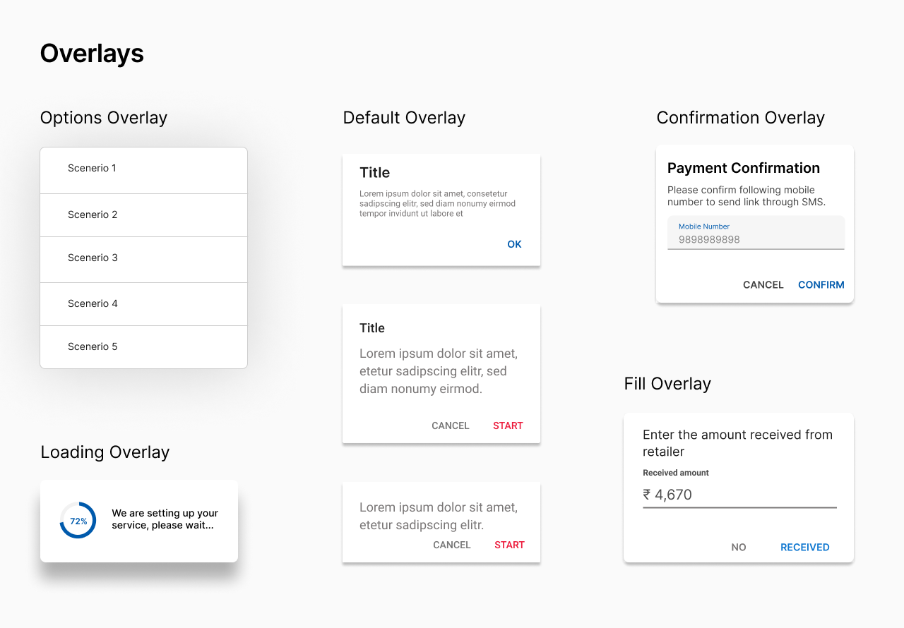

I’m a Product Designer focused on inclusive design, with proficiency in web and app development. I work to create experiences which makes technology more accessible to people, while providing an enriching visual experience. Currently pursuing Master's in Human-Computer Interaction at University of Maryland, College Park, set to graduate in 2023.
Known as Tushar. I am a self-taught designer with a knack for attention to detail. I believe in inclusivity and accessibility, and look to develop products which can contribute to the society positively. I have a bachelors degree in Computer Science from BITS Pilani, India.
Having developed my design thinking through various college projects and work experience, I was able to embrace my creative side and apply my engineering lessons into my thinking. With my background in design and engineering, I create interfaces and experiences which are user-friendly and developer-friendly.
I am always learning more about design, how it affects people and how it can improve their lives. I believe that no problem is unsolvable, especially when you are surrounded by a group of people supporting each other and adding to the thinking process.
Beyond design, I am an ambivert with a huge passion for soccer and tennis. I am a nerd about comics, manga, Star Wars and LOTR. You can find me listening to classic rock, hard rock and blues.
Interested in getting in touch?
Pay1 focuses on providing digital payment platform for the businesses in the unorganized retail sector of India, and help them expand and scale better while achieving financial empowerment.
As a UX Design intern, I worked with the design team and development team. We created the Pay1 Design System, inspired from Material Design. I also led the design of the user reward system in the Distributor app of Pay1, but I cannot delve into the details of the module due to NDA.
As Pay1 had multiple apps, each for different audience and with different features, there was a need to have a design system and component library which represents the values of the company and provides a unified ecosystem for the apps. So this was one of the tasks which I started with when I joined the company. The work was already started by the existing design team a little before I joined and I was tasked with creating the typography, few components and contribute to the color palette, which you can see below.
When I started working on the design system, user research had been conducted, where we got the answers to questions related to the customer experience, usability, intuitive nature of the apps, and cohesive nature of the apps. That gave us a solid platform to work on. We drew inspiration from Material Design principles and got to work.
The design team conducted a meeting with the developers, product managers and stakeholders to understand the parts of the apps we had and prioritize which parts needed to be a common component and get their ideas on the design system. The decisions were made based on user data collected from the app and user interviews conducted.
After we decided on the components, I started designing the Dialog boxes, Overlays, Cards, Lists and Buttons used in the apps. Idea was to keep the UI simple and make it accessible as the target audience is a largely uneducated or less exposed to the smartphone culture. This drove the developement of the design system as a whole, while striving for a more organized foundation based on which designs can be made for Pay1.
Despite the short time spent with the team, I gained experience with the process of creating a unified design system, performing user research, user journey mapping, and usability testing. This internship gave me the chance to work as a pure designer and the opportunity to be a part of the product thinking process. The experience working as a developer helped me get my points and design decisions across the developer team.
GroupFit is an app solution for an 8 hour long hackathon, upon which I worked and have since expanded the design based on my inital ideas for the app features.
Maintaining fitness with a busy work schedule, especially with the pandemic, is tough. While some are successful in managing time and do activities which help keep them fit, some struggle to get into a routine. There are a lot of apps which provide fitness solutions to the users, but often rely on the user to be accountable for themselves which makes it easy for possible break in the routine to maintain fitness. So a solution is needed to help keep the user motivated to keep a daily routine and provide some support with their efforts.
An easy to use app which provides the user to form groups with friends and people with similar interests and particiapte in group activities based on each person's schedule, thereby promoting collaboration among the users with respect to fitness.
Due to the very short time, I could only conduct interviews with 2 people. Following are the findings:
This project helped me improve my skills in prototyping and design thinking. Due to the very short time, it was a challenge to be able to implement most of my ideas, conduct a more thorough user research and conduct user testing. On the other hand, I was able to experiment with my visual design and try interactions which isn't common practice in most apps.
Nibble Computer Society is a college society in JSSATE Noida, where a group of students come together to learn and improve their technical skills. Together we built digital projects to help college students and faculties.
As a part of NCS, I designed creatives & interactions for several projects, college fest, online games and platforms. We held daily labs after our classes to work on such projects.
As a Creative Head in the final year, I headed the design club at NCS. I mentored students, sharing my learnings in UI/UX design, graphic design, animation and front-end development.
Cryptorai is a comprehensive cryptocurrency portfolio tracker and market data application. It aggregates portfolio info from all the major exchanges at one place and provides real-time updates, to make better trading decisions.
As a UI/UX Design intern, I designed information architecture, user flow, wireframes and prototypes for Crytorai app and web-app, across multiple versions. We started with Material Design and later moved to a new extensive styleguide.